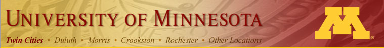

Lunchtime interludes
Phil Heywood, 1986 National Fingerpicking Champion, took the stage at last year's "Summer at Northrop." The free outdoor concert series begins Monday, June 4, from noon to 1 p.m. with bluegrass band Switched at Birth.